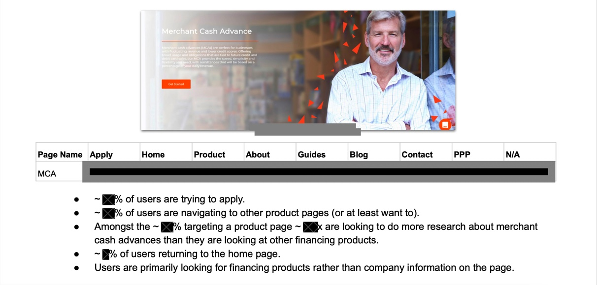
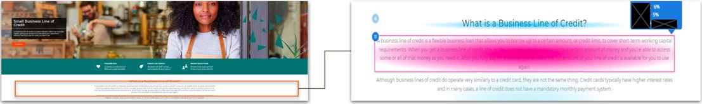
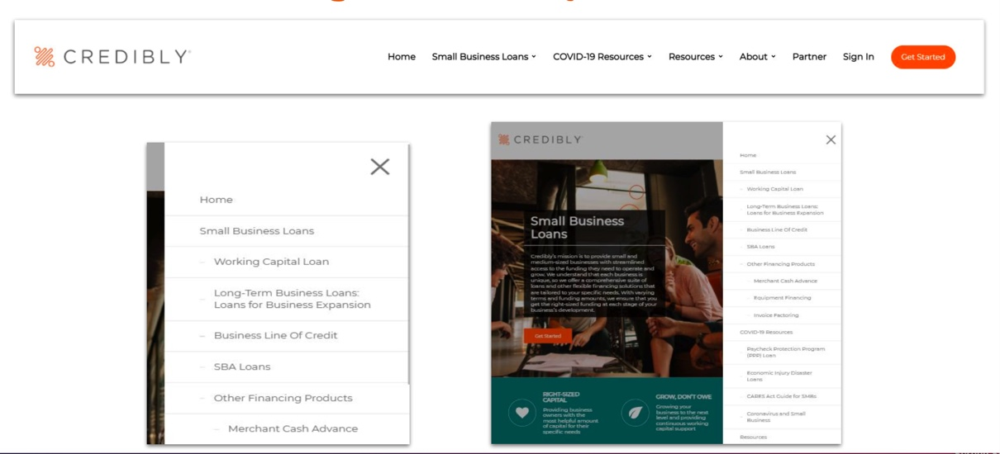
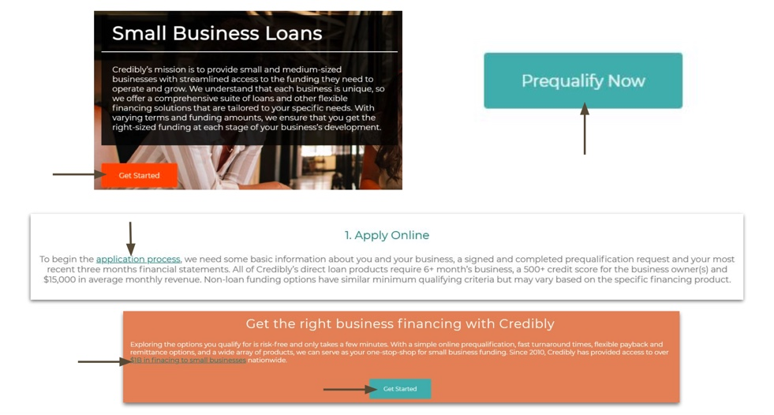
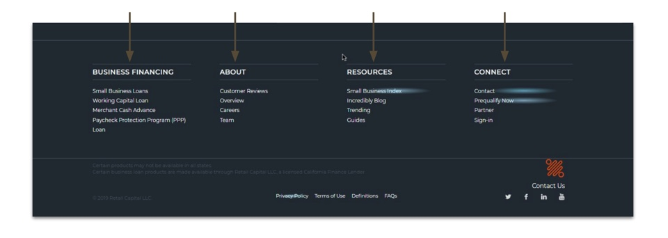
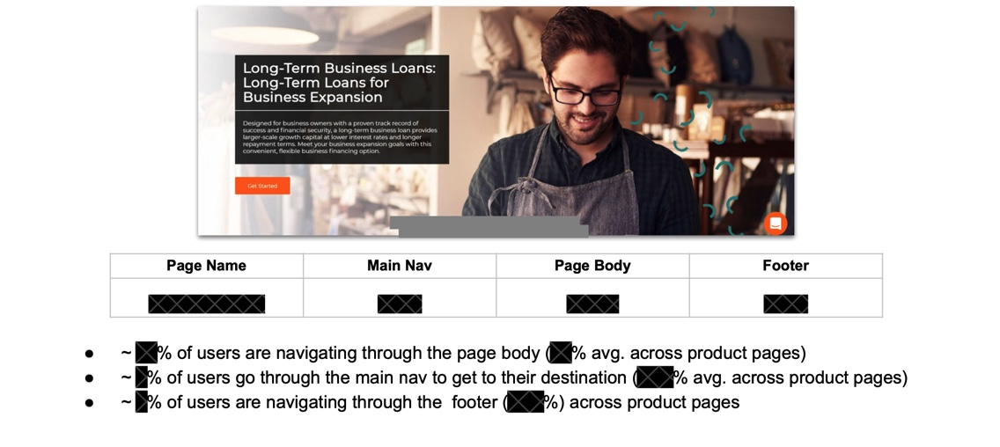
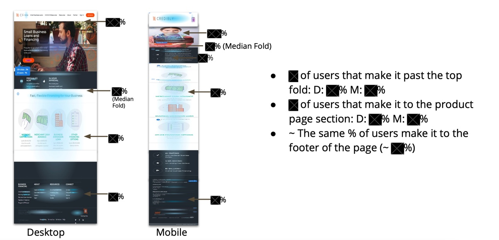

Overview
*Due to NDA I cannot share everything regarding the work and projects I was a part of. Please contact me for further details.*
Throughout the summer of 2021, I worked at Credibly as UX research intern. Credibly is a finance-tech lending company that leverages cutting-edge data science, technology, partner relations, and customer support to provide business owners with accelerated access to right-sized capital solutions.
Research Methodology
I worked with user heatmaps to analyze Credibly landing pages and provide meaningful insights and visualizations to improve user experience and on-page conversion rate
- Ensure user’s desired target page is available and obvious
- Optimal call to action placements
- Analyzing desktop vs. mobile split and conversion rate
- Identify website bugs and inefficiencies
Target Page Analysis
Where do users want to go?
- Depending on where the users wants to go, we can make more informed decisions on how to optimize user flow
- Classify target placements into mutually exclusive buckets: Home, Apply, Product, About, Guides, Blogs, Contact, PPP, N/A
- Analyze desired target page in relation to current page
- Identify and eliminate recurring rage click/misclicks pathway
Framework Example:


User Navigation Analysis
How are users are getting to their desired destination (target page)?
- Depending on where the users actually click (end destination), we gain insights on whether we have enough on page links/buttons for the user and if they are obvious or not
- Classify click regions into mutually exclusive buckets: Main header navigation, On-page body clicks, Footer navigation
- Analyze desired target page in relation to current page
Framework Example:
Main header navigation

On-page body clicks

Footer


Scroll Map Analysis
How far do visitors make it through a page?
- Assessing drop-offs: At what point a user leaves a page
- Analyzing how many of our on-page Call to actions are viewed
- Helps us better prioritize the sections of the page from top to bottom
Framework Example:

Google Analytics Data
How can pairing google analytics data with click map and scroll map findings allows us to make more informed decisions regarding strategic UX?
- Mobile vs. Desktop split
- Bounce Rate by Device Type
- Average time on page by Device Type
- By comparing pages against each other, we can extract insights regarding how well pages perform relative to benchmark
- By comparing mobile against desktop for a specific page, we can extract insights about device type performance
Outcome
During my time at Credibly, I was exposed to many different research projects and in-house developments. As a result, I gained valuable field experience in hands-on UX research and design initiatives. Again, Due to NDA, I cannot provide deliverable specifics here. The information above highlights the impacts that I made within the marketing team throughout my internship.